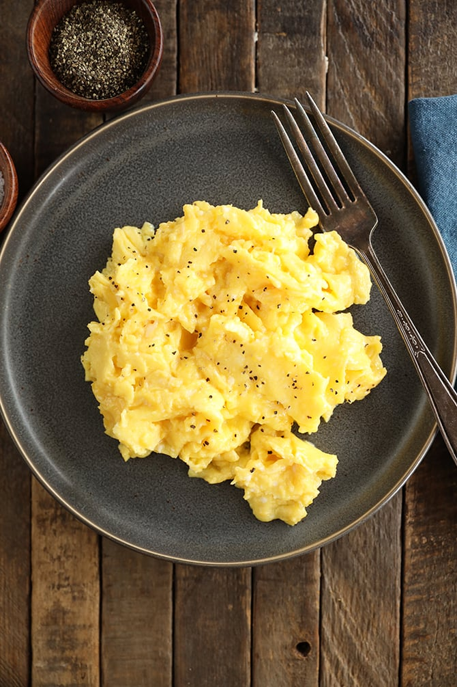

|  |
Scrambled eggs are a popular breakfast dish and probably one of the first foods many of us ever learned to cook! Simply put, scrambled eggs are whisked eggs, cooked over medium heat in a skillet or frying pan until fluffy and dense. Some people like to add milk or butter when making scrambled eggs. To accomplish scrambled eggs, the eggs are traditionally whisked or beaten until the yolks and whites are well mixed. The mixture is then poured into your skillet or frying pan that should be greased to prevent sticking. Stirring the eggs regularly makes them literally scrambled, hence the name! Scrambled eggs are often served hot and eaten right away. |
|